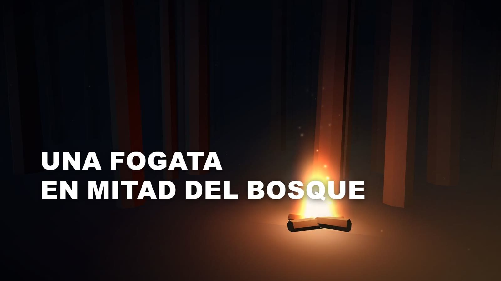
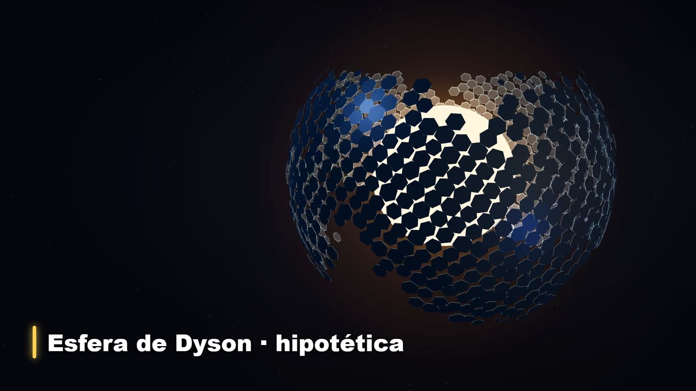
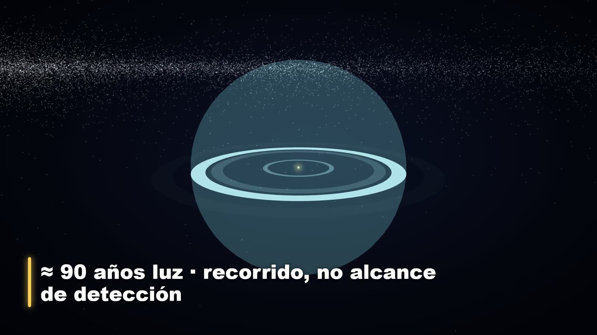
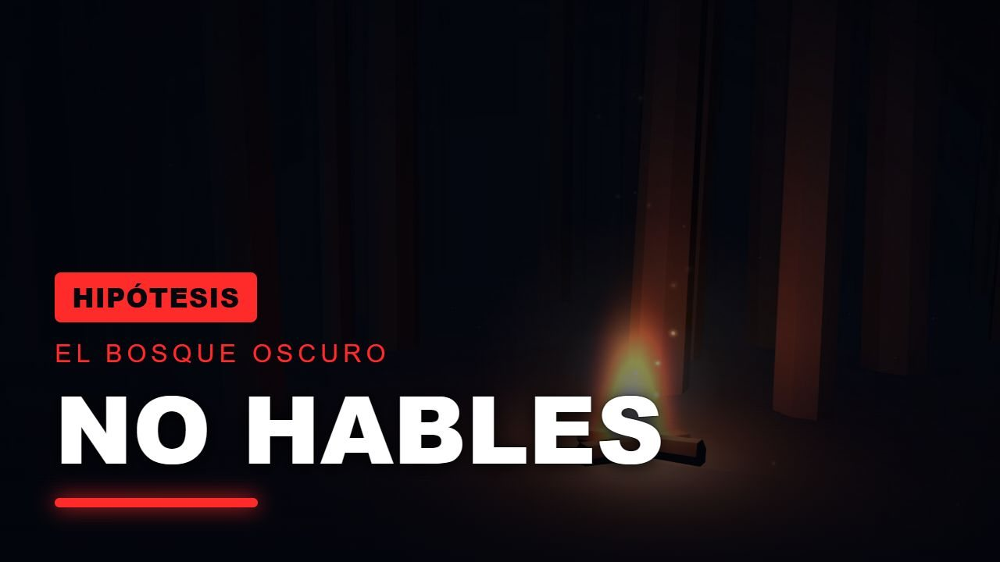

Motion y video · 2026
El Bosque Oscuro
Por qué nadie responde en el Universo · Factor Cosmos, episodio 22
- Contexto
- Proyecto personal: Factor Cosmos, mi canal de divulgación espacial en YouTube
- Fecha
- septiembre de 2026
- Mi rol
- Idea y tema, dirección del proyecto, revisión del corte final y aprobación
- Herramientas
- Flujo de producción de Factor Cosmos (Remotion y three.js), voz sintética de Azure

El reto
Explicar la paradoja de Fermi y la hipótesis del «bosque oscuro», dos ideas abstractas, sin imágenes inventadas: todo debía salir de fotografías reales de la NASA o de escenas construidas en código.
Proceso
Propuse el tema y el formato: un video de cinco minutos con escenas 3D. El guion se verificó con fuentes antes de generar la narración con voz sintética. Las escenas (la esfera de Dyson, el mensaje de Arecibo, la burbuja de señales de radio, el bosque con la fogata y el acercamiento a la Tierra) se construyen con three.js dentro de Remotion, y los textos aparecen sincronizados con la voz.
En la revisión del corte final pedí cambios concretos: quitar el cursor, una Tierra sin aro, estrellas redondas, una música más oscura en la revelación y un cierre que se apaga en ocho segundos.
Resultado
Publicado el 12 de septiembre de 2026 en Factor Cosmos.


